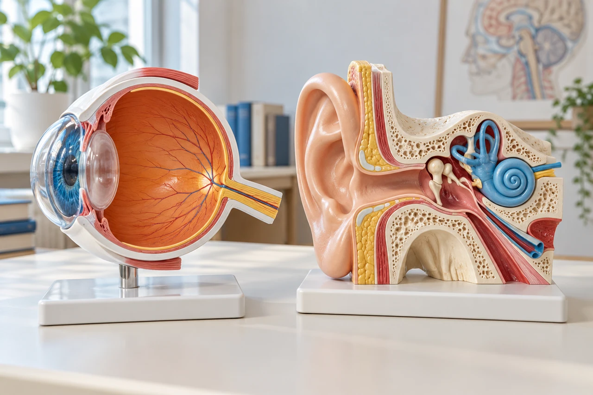

MEDLEX / SAPPHIRE
The senses
 MedLexTHE LANGUAGE OF MEDICINE
MedLexTHE LANGUAGE OF MEDICINE Healthcare Crown Academy
Healthcare Crown AcademyMEDLEX / BATCH 03
The senses
Learn the words, trace the relationships and explain the clinical meaning with precision.

01 / CLINICAL HOOK
One experience. Three different terms.
Explore the detail panels. Recall the meaning. Explain the distinction.
Predict the sense involved in each symptom. The words describe experiences; they do not establish the cause.
02 / OUTCOMES & OUTLINE
Your learning route
Explore the detail panels. Recall the meaning. Explain the distinction.
01 · Locate
Identify the main sensory organs, receptors and pathways.
02 · Decode
Use roots, prefixes and suffixes to interpret unfamiliar terms.
03 · Distinguish
Explain common symptoms, conditions and sensory tests.
04 · Apply
Translate a short clinical description into accurate terminology.
Success target: define the word, locate the sense, and explain what the term does—and does not—tell you.
03 / CLICK A SENSORY SYSTEM
More than the familiar five.
Explore the detail panels. Recall the meaning. Explain the distinction.
Stimulus → receptor → nerve signal → perception. Body senses include touch, temperature, pain and proprioception: awareness of body position and movement. Vestibular sensation contributes to balance.
04 / WORD-PART FLIP CARDS
A small toolkit. Many useful words.
Explore the detail panels. Recall the meaning. Explain the distinction.
an- absence · hypo- reduced · dys- disordered
Cyan: roots · amber: suffixes . Start with the ending; check the whole clinical meaning.
05 / ANATOMY EXPLORER
Inside the eye
Explore the detail panels. Recall the meaning. Explain the distinction.
NIH / National Eye Institute · Eye diagram · Click to enlarge.
Do not confuse the iris with the pupil, or the retina with the lens.
Source desk
[03] NIH • National Eye Institute ↗06 / VISION PATHWAY LAB
Follow the light. Then follow the signal.
Explore the detail panels. Recall the meaning. Explain the distinction.
Cornea and lens refract light. Retinal circuits convert and process that input; signals then travel through the optic nerve and other visual pathways.
Source desk
[03] NIH • National Eye Institute ↗07 / REFRACTIVE TERMINOLOGY
When focusing changes
Explore the detail panels. Recall the meaning. Explain the distinction.
Presbyopia and hyperopia both affect near vision, but they describe different optical problems.
Source desk
[04] NIH • National Eye Institute ↗08 / OPHTHALMIC VOCABULARY
Symptoms and diseases are different kinds of words.
Explore the detail panels. Recall the meaning. Explain the distinction.
Cataract · lens
Clouding of the lens that can impair vision.
Glaucoma · optic nerve
A group of diseases that damage the optic nerve. Raised eye pressure is a risk factor, but pressure can be normal.
Conjunctivitis · conjunctiva
Inflammation of the conjunctiva. Causes include infection, allergy and irritation.
Diplopia · symptom
Seeing two images of one object. The term does not identify its cause.
Retinopathy = disease of the retina. Ophthalmology = the medical specialty concerned with the eyes.
09 / EAR ANATOMY EXPLORER
Three regions. Two sensory roles.
Explore the detail panels. Recall the meaning. Explain the distinction.
NIH / NIDCD · Ear illustration · Click to enlarge.
Outer + middle ear
Pinna and canal collect sound. The eardrum and ossicles transmit vibration.
Inner ear
Cochlea: hearing. Vestibular organs: head motion and orientation.
Ossicles: malleus, incus and stapes. Tympanic membrane = eardrum.
10 / HEARING PATHWAY LAB
From sound wave to neural signal.
Explore the detail panels. Recall the meaning. Explain the distinction.
Conductive loss
Sound transmission is impaired in the outer or middle ear.
Sensorineural loss
The inner ear or auditory nerve is affected.
Mixed loss
Conductive and sensorineural components occur together.
11 / HEARING & BALANCE VOCABULARY
Hear the distinctions
Explore the detail panels. Recall the meaning. Explain the distinction.
Balance integrates vestibular, visual and body-sense information. “Dizziness” is broader than vertigo.
12 / OLFACTORY LANGUAGE
Smell: name the change.
Odour molecules stimulate olfactory sensory neurons high in the nasal cavity.
Odour molecules stimulate olfactory sensory neurons high in the nasal cavity.
Olfaction = smell. Compare “coffee now smells burnt” with “I smell smoke when there is none.”
Source desk
[12] NIH • NIDCD ↗13 / GUSTATORY LANGUAGE
Taste is part of flavour.
Explore the detail panels. Recall the meaning. Explain the distinction.
Ageusia
Loss of the ability to detect taste.
Hypogeusia
Reduced taste sensitivity.
Dysgeusia
Distorted taste perception, such as a persistent metallic or unpleasant taste.
Gustation = taste. Flavour combines taste, retronasal smell, texture and other sensations. Taste qualities are not confined to exclusive tongue zones.
Source desk
[13] NIH • NIDCD ↗14 / SOMATOSENSORY VOCABULARY
The language of body sensation.
Explore the detail panels. Recall the meaning. Explain the distinction.
Touch, temperature, pain and position sense are related but distinct. Describe the modality, site and pattern.
15 / INTERACTIVE WORD LAB
Build it. Then define it.
Explore the detail panels. Recall the meaning. Explain the distinction.
16 / EXAMINATIONS & RECORDS
What does the test measure?
Explore the detail panels. Recall the meaning. Explain the distinction.
Visual acuity
Clarity of vision, often assessed with a letter or symbol chart.
Tonometry
Measurement of intraocular pressure. The reading alone does not diagnose glaucoma.
Otoscopy
Visual examination of the external ear canal and tympanic membrane.
Audiometry · audiogram
Measurement of hearing · the record of those results.
Tympanometry evaluates eardrum movement and middle-ear function as pressure changes. It is different from measuring hearing thresholds.
17 / APPLICATION & EXIT TICKET
Translate. Distinguish. Retrieve.
Explore the detail panels. Recall the meaning. Explain the distinction.
Exit ticket: define three terms from memory and translate the opening sentence. Revisit them tomorrow.
18 / SOURCE DIRECTORY · 1 OF 2
References & further reading
Explore the detail panels. Recall the meaning. Explain the distinction.
Visual pathway and credited eye illustration.
Myopia, hyperopia, astigmatism and presbyopia.
Conjunctivitis and its different causes.
Hearing pathway and credited ear illustration.
Hearing-loss types, audiometry and middle-ear testing.
Perceived sound without an external source.
Checked 19 October 2026. Established terminology may use older, still-current sources. This is a terminology lesson, not a clinical management guide.
Source desk
[01] NLM • MedlinePlus Understanding Medical Words Word-building approach. ↗[02] NLM • MedlinePlus Word Parts and What They Mean Roots, prefixes and suffixes. ↗[03] NIH • National Eye Institute How the Eyes Work Visual pathway and credited eye illustration. ↗[04] NIH • National Eye Institute Refractive Errors Myopia, hyperopia, astigmatism and presbyopia. ↗[05] NIH • National Eye Institute Cataracts Lens opacity. ↗[06] NIH • National Eye Institute Glaucoma Optic nerve damage and pressure. ↗[07] NIH • National Eye Institute Pink Eye Conjunctivitis and its different causes. ↗[08] NIH • NIDCD How Do We Hear? Hearing pathway and credited ear illustration. ↗[09] NLM • MedlinePlus Hearing Tests for Adults Hearing-loss types, audiometry and middle-ear testing. ↗[10] NIH • NIDCD Tinnitus Perceived sound without an external source. ↗18 / SOURCE DIRECTORY · 2 OF 2
References & further reading
Explore the detail panels. Recall the meaning. Explain the distinction.
Anosmia, hyposmia, parosmia and phantosmia.
Gustation, flavour and taste disturbances.
Visual acuity and tonometry; updated 26 November 2025.
Presbycusis and hearing professionals.
Double vision and other visual symptoms.
Checked 19 October 2026. Established terminology may use older, still-current sources. This is a terminology lesson, not a clinical management guide.
Source desk
[11] NIH • NIDCD Balance Disorders Vestibular function and vertigo. ↗[12] NIH • NIDCD Smell Disorders Anosmia, hyposmia, parosmia and phantosmia. ↗[13] NIH • NIDCD Taste Disorders Gustation, flavour and taste disturbances. ↗[14] IASP Terminology Sensory and pain terminology. ↗[15] NIH • Clinicalinfo Paresthesia Pins-and-needles terminology. ↗[16] NIH • National Eye Institute Get a Dilated Eye Exam Visual acuity and tonometry; updated 26 November 2025. ↗[17] NIH • NIDCD Age-Related Hearing Loss Presbycusis and hearing professionals. ↗[18] NLM • MedlinePlus Vision Problems Double vision and other visual symptoms. ↗[19] NLM • MeSH Proprioception Position and movement sense. ↗Teaching imagery combines generated raster artwork and symbols from the supplied Health Icons asset packs. Models and scenes are conceptual teaching aids. They are not diagnostic diagrams or patient images. Source desks retain attribution to OpenStax, Open RN and the clinical publishers used in the original lessons. No source endorsement is implied.